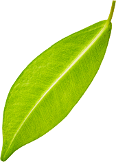

¡No es demasiado tarde!
Alcotox cambiará tu vida para mejor
La principal ventaja de Alcotox es su tecnología patentada de extracción de componentes con ultrasonido. Bajo la acción del ultrasonido, la extracción es más eficiente: las moléculas conservan la estructura original y su forma biológicamente activa. Esto hace que el producto sea lo más efectivo posible en la lucha contra la dependencia del alcohol.
Alcotox bloquea naturalmente la descomposición del alcohol etílico, lo que causa en la persona un rechazo persistente a las bebidas alcohólicas.
¿cómo ayuda Alcotox a vencer la adicción?
Gengibre
Neutraliza el deseo de alcohol
Alivia el síndrome de resaca y provoca rechazo persistente al alcohol. Normaliza el funcionamiento del sistema nervioso, alivia el estrés mental, mejora la memoria, la coordinación y la concentración.
Cayena
Limpia y restaura el cuerpo
Neutraliza los venenos y toxinas en el cuerpo, ayuda a la personas a recuperarse más rápido después de tomar alcohol por tiempo prolongadi. Limpia la sangre, ayuda a los órganos internos a retornar su estado saludable.
Espinacas
Fija el resultado
Causa una aversión persistente al alcohol, no permite el desarrollo del síndrome de abstinencia, combate la depresión y mejora el estado de ánimo.